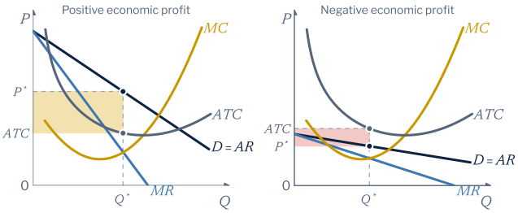
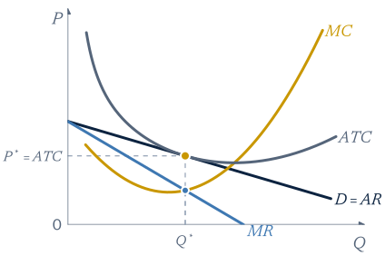
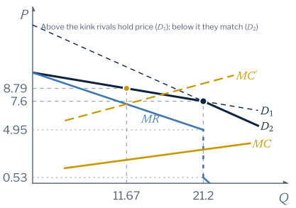
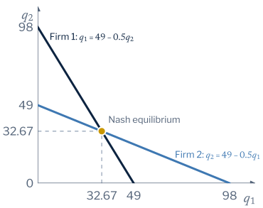

Lesson 10
FIN 30210 Managerial Economics
Jason R. Reed, PhD, University of Notre Dame
On the spectrum of competition, monopolistically competitive (MCP) firms share characteristics of both perfect competition and monopoly.
Sellers
A large number of firms, each a small percentage of total industry output.
Buyers
A large number of buyers. Resources move easily between alternative uses.
Product differentiation
Similar but not identical products that consumers see as different enough, such as beer or shoes. They’re substitutes, but not perfect ones, which creates non-price competition.
Entry and exit
Easy entry into and exit from the industry.

\[ \frac{\pi}{Q^*} = \frac{TR}{Q^*} - \frac{TC}{Q^*} = AR - ATC^* = 0 \;\Rightarrow\; P^* = ATC^* \]

Problem 10.1 A typical firm in a monopolistically competitive industry faces demand \(Q = 20 - \tfrac{1}{3}P\) and total cost \(TC = 100 - 5Q + Q^2\).
Before entry
Rewrite demand in terms of \(Q\): \(P = 60 - 3Q\). Then \(\dfrac{d\pi}{dQ} = 60 - 6Q + 5 - 2Q = 0 \Rightarrow Q^* = 8.125\) and \(P^* = 60 - 3(8.125) = 35.625\)
After entry
\(P = 35 - 3Q\), so \(\dfrac{d\pi}{dQ} = 35 - 6Q + 5 - 2Q = 0 \Rightarrow Q^* = 5\), and \(\pi = (35 - 15)(5) - (100 - 25 + 25) = 0\)
One entrant is enough to push economic profit to zero.
Sellers
Generally a few firms (2 to 8) controlling roughly 75% or more of a market, with strategic interaction between them.
Buyers
Unspecified, but assumed to be large in number.
Product differentiation
Products can be homogeneous (steel, copper) or differentiated (automobiles, televisions).
Entry and exit
Keeping a duopoly or oligopoly in the long run takes some barrier to entry, much like the ones monopolists enjoy.
Concentration measures give the Department of Justice a way to identify and act on monopolistic behavior.
Concentration ratio The share of total industry revenue, or market share, held by the top four or eight firms. It gives no extra weight to large firms, which can mislead.
Herfindahl-Hirschman Index The sum of the squared market shares of the firms in the industry:
\[ HHI = \sum_{i=1}^{n} S_i^2 \]
\(S_i\) is firm \(i\)’s market share in percentage points, so the index runs from near 0 to 10,000.
The HHI is better than a concentration ratio because it gives more weight to firms with larger market shares.
2010 Horizontal Merger Guidelines Unconcentrated below 1,500; moderately concentrated from 1,500 to 2,500; highly concentrated above 2,500. A change of more than 100 points often drew scrutiny.
2023 Merger Guidelines A merger is presumed to lessen competition if the post-merger HHI is above 1,800 with an increase of more than 100, or if the merged firm’s share is above 30% with an increase of more than 100.
The FTC and DOJ kept the 2023 Merger Guidelines in effect in February 2025.
Problem 10.2 Using 2017 US auto market shares, find the 4-firm and 8-firm concentration ratios and the HHI. Would the DOJ investigate a GM and Ford merger?
| Firm | Share | Firm | Share | Firm | Share |
|---|---|---|---|---|---|
| GM | 16.5% | Mazda | 1.6% | Audi | 1.2% |
| Ford | 15.1% | Mitsubishi | 0.8% | BMW | 2.0% |
| Chrysler | 12.0% | Kia | 3.2% | Porsche | 0.3% |
| Toyota | 13.8% | Subaru | 3.5% | Fiat | 0.2% |
| Honda | 8.8% | Mercedes | 2.1% | Tesla | 0.3% |
| Nissan | 10.9% | Volvo | 0.3% | Jaguar Land Rover | 0.8% |
| Hyundai | 4.5% | Volkswagen | 1.8% | Alfa Romeo | 0.3% |
Concentration ratios
4-firm: \(16.5 + 15.1 + 13.8 + 12.0 = 57.4\%\). 8-firm: \(57.4 + 10.9 + 8.8 + 4.5 + 3.5 = 85.1\%\)
HHI
\(16.5^2 + 15.1^2 + 13.8^2 + \cdots + 0.3^2 = 1{,}091\)
GM and Ford merge
The merged share is 31.6%, so \(HHI = 31.6^2 + 13.8^2 + \cdots = 1{,}589\), an increase of \(2(16.5)(15.1) = 498\) points. The market moves from unconcentrated to moderately concentrated, and the merged firm tops 30% with an increase over 100.
Yes, most likely. An increase that large is a red flag under either set of guidelines.
The kinked demand model tries to explain the price rigidity seen in some oligopolies. The oligopolist actually faces two demand curves.
Firm 1 raises its price above \(P^*\) If rivals follow suit, all firms may or may not be better off. If rivals hold prices, Firm 1 is worse off and loses market share. Demand is more elastic, because competitors held their lower prices.
Firm 1 cuts its price below \(P^*\) If rivals follow suit, all firms lower prices rather than cede market share. Demand is more inelastic, because competitors cut prices too. If rivals hold prices, they sell to no one.

Problem 10.3 An oligopolist faces the two demand curves \(Q_1 = 82 - 8P\) and \(Q_2 = 44 - 3P\), and total cost \(TC = 8 + Q + 0.05Q^2\).
The kink
Set the demands equal: \(82 - 8P = 44 - 3P \Rightarrow P^* = 7.6\) and \(Q^* = 21.2\). Here \(MC = 1 + 0.1(21.2) = 3.12\), inside the gap.
The gap in MR
\(P = 10.25 - \tfrac{1}{8}Q_1\) gives \(MR_1 = 10.25 - \tfrac{1}{4}Q\); \(P = 14.67 - \tfrac{1}{3}Q_2\) gives \(MR_2 = 14.67 - \tfrac{2}{3}Q\). At \(Q^* = 21.2\), MC can run from 0.53 to 4.95.
New costs
\(MC = 5 + 0.2(21.2) = 9.24\) is above the gap, so use \(MR_1\): \(10.25 - 0.25Q = 5 + 0.2Q \Rightarrow Q = 11.67\) and \(P = 8.79\)
\[ P = a - b(q_1 + q_2) \]
\[ \pi_1(q_1, q_2) = q_1\big(a - b(q_1 + q_2)\big) - TC(q_1) \qquad \pi_2(q_1, q_2) = q_2\big(a - b(q_1 + q_2)\big) - TC(q_2) \]
With constant marginal cost \(c\), each firm’s first-order condition gives its reaction function: the quantity that maximizes its profit given the rival’s choice.
\[ \frac{\partial \pi_1}{\partial q_1} = a - 2bq_1 - bq_2 - c = 0 \;\Rightarrow\; q_1 = \frac{a - c}{2b} - \frac{1}{2}q_2 \qquad\quad q_2 = \frac{a - c}{2b} - \frac{1}{2}q_1 \]
Suppose \(P = 120 - 3Q\), with \(Q = Q_1 + Q_2\), and each firm’s cost is \(TC = 12Q_i\).
\[ \pi_1 = \big(120 - 3(Q_1 + Q_2)\big)Q_1 - 12Q_1 \qquad \frac{\partial \pi_1}{\partial Q_1} = 120 - 6Q_1 - 3Q_2 - 12 = 0 \]
\[ Q_1 = 18 - \tfrac{1}{2}Q_2 \qquad Q_2 = 18 - \tfrac{1}{2}Q_1 \]
\[ Q_1 = 18 - \tfrac{1}{2}\left(18 - \tfrac{1}{2}Q_1\right) = 9 + \tfrac{1}{4}Q_1 \;\Rightarrow\; Q_1^* = 12, \quad Q_2^* = 12 \]
Problem 10.4 Two duopolists face industry demand \(P = 200 - 2Q\), and each has \(TC = 4Q\). What are each firm’s equilibrium price and quantity under Cournot?
\(\pi_1 = 196Q_1 - 2Q_1^2 - 2Q_1 Q_2\)
\(\dfrac{\partial \pi_1}{\partial Q_1} = 196 - 4Q_1 - 2Q_2 = 0 \Rightarrow Q_1 = 49 - \tfrac{1}{2}Q_2\)
By symmetry \(Q_1^* = Q_2^* = 32.67\)
\(P = 200 - 2(65.33) = 69.33\)

The Bertrand model assumes firms choose price, and quantity follows from the price decisions. Each firm faces its own demand curve, rather than sharing industry demand as in Cournot:
\[ Q_1 = f_1(P_1, P_2^e) \qquad Q_2 = f_2(P_1^e, P_2) \]
\[ \pi_1 = P_1 f_1(P_1, P_2^e) - TC_1(P_1, P_2^e) \qquad \pi_2 = P_2 f_2(P_1^e, P_2) - TC_2(P_1^e, P_2) \]
To solve, write profit in terms of prices, not quantities; differentiate each firm’s profit with respect to its own price; solve for each reaction function (\(P_1\) in terms of \(P_2\), and \(P_2\) in terms of \(P_1\)); then solve the system.
Problem 10.5 Two duopolists face demand \(Q_1 = 50 - 0.5P_1 + 0.25P_2\) and \(Q_2 = 50 - 0.5P_2 + 0.25P_1\), and each has \(TC = 4Q\). What are each firm’s equilibrium price and quantity under Bertrand?
\[ \pi_1 = P_1(50 - 0.5P_1 + 0.25P_2) - 4(50 - 0.5P_1 + 0.25P_2) \qquad \frac{\partial \pi_1}{\partial P_1} = 50 - P_1 + 0.25P_2 + 2 = 0 \]
\[ P_1 = 52 + 0.25P_2 \qquad P_2 = 52 + 0.25P_1 \;\Rightarrow\; P_2 = 65 + 0.0625P_2 \;\Rightarrow\; P_1^* = P_2^* = 69.33 \]
\[ Q_1 = Q_2 = 50 - 0.5(69.33) + 0.25(69.33) = 32.67, \quad Q = 65.33 \]
The Stackelberg model has a leader and a follower in quantity decisions. The leader is rewarded by capturing more of the market early.
Firm 2, the leader, believes Firm 1 will behave exactly as in the Cournot model. It exploits that by building Firm 1’s reaction function into its own profit-maximizing choice.
Demand is \(P = 200 - 2(q_1 + q_2)\), and \(TC_1 = 4q_1\), \(TC_2 = 4q_2\).
Follower’s reaction
\(\dfrac{\partial \pi_1}{\partial q_1} = 200 - 4q_1 - 2q_2 - 4 = 0 \Rightarrow q_1 = 49 - \tfrac{1}{2}q_2\)
Leader’s choice
\(\pi_2 = 196q_2 - 2q_2^2 - 2\left(49 - \tfrac{1}{2}q_2\right)q_2 = 98q_2 - q_2^2\), so \(\dfrac{d\pi_2}{dq_2} = 98 - 2q_2 = 0 \Rightarrow q_2^* = 49\)
Outcome
\(q_1^* = 49 - \tfrac{1}{2}(49) = 24.5\), \(Q^* = 73.5\), and \(P = 200 - 2(73.5) = 53\)
When firms recognize their interdependence and agree to coordinate output to maximize industry profit:
Collusive agreements and cartels are hard to maintain: contracts are hard to enforce, so each member has an incentive to cheat. They’re also highly illegal.
Industry profit is the sum of the firms’ profits. With the same demand and costs:
\[ \pi = \pi_1 + \pi_2 = 196q_1 + 196q_2 - 2q_1^2 - 2q_2^2 - 4q_1 q_2 \]
\[ \frac{\partial \pi}{\partial q_1} = 196 - 4q_1 - 4q_2 = 0 \qquad \frac{\partial \pi}{\partial q_2} = 196 - 4q_2 - 4q_1 = 0 \;\Rightarrow\; q_1 + q_2 = 49 \]
Splitting output equally gives \(q_1^* = q_2^* = 24.5\), but a prior agreement could split it differently: \(q_1^* = 2q_2^*\) gives \(q_1^* = 32.67\) and \(q_2^* = 16.33\). Price is \(P^* = 200 - 2(49) = \$102\).
With demand \(P = 200 - 2Q\) and \(MC = 4\) for each firm:
| Model | Firm 1 | Firm 2 | Industry output | Price | Industry profit |
|---|---|---|---|---|---|
| Cournot | 32.67 | 32.67 | 65.33 | $69.33 | $4,268 |
| Stackelberg (Firm 2 leads) | 24.5 | 49 | 73.5 | $53 | $3,602 |
| Collusion | 24.5 | 24.5 | 49 | $102 | $4,802 |
The Bertrand example used a different, differentiated-demand setup, so it isn’t directly comparable.
Up next: Lesson 11
FIN 30210 Managerial Economics